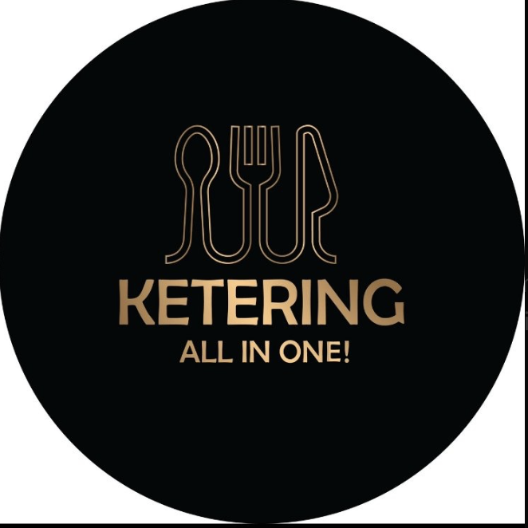

KETERING
ALL IN ONE
TELEFON: 0605333125
MAIL: Igorradosavljevic88@gmail.com
Radimo sve vrste proslava i keteringa.
Dostavljamo ručak na vašu adresu.
Finger food preko 20 osoba.
Tri osnovna menija za Švedski sto.
Mogućnost promene menija po dogovoru.